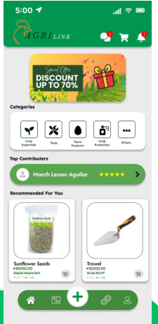
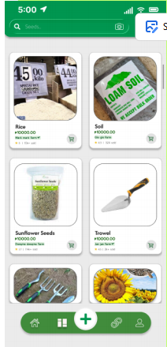
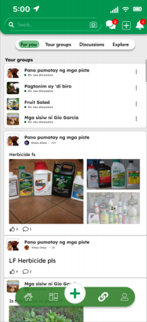
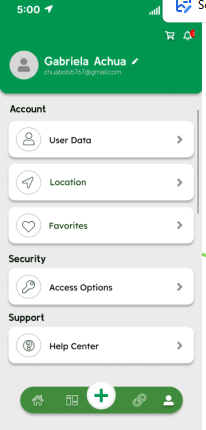

Project Case Study
AgriLink UI
Role: Lead UI Designer | Tech Stack: Figma
1. Project Overview
AgriLink is an e-commerce application designed for farmers. It aims to promote pricing transparency and make selling agricultural products as easy as posting on social media.
2. Problem Addressed
Farmers were in need of an easier way to sell their products and at the same time provide clear pricing information. That is why, AgriLink aims to address these needs through an online platform focused on them and their needs.
3. Objectives
a. Promote transparent pricing.
b. Make product marketing and selling easier.
c. Provide a platform for sharing their content and a group discussion for open communication.
d. Have a simple and organized interface
4. Developer's Role
My role is to create the UI for the application, making sure it had the necessary features whilst keeping it simple and easy to navigate for the user.
5. Technologies Used
The tools that I used in creating the UI is Figma and IbisPaint X for the logo and other designs. (All drawn by me)
6. Screenshots
Explore the core screens of the AgriLink mobile application design:

Home Screen

Content Screen

Group Discussions Screen

User Screen
7. Development Decisions
This design utilizes a familiar social-media-style in order to make product posting easier. It also includes group discussions or forums.
8. Challenges Encountered
Due to limited time and persons working, beta testing was not possible and we were unable to fully confirm its results.
9. Solution
AgriLink proposes an online platform where farmers can post products, access pricing information, and interact through group discussions.
10. Results
Although due to lack of time for the testing, we were still able to showcase AgriLink to our 6PHCI professor.
11. Lessons Learned
This project emphasizes the imortance of a user-friendly design when creating an application for a specific group of users.